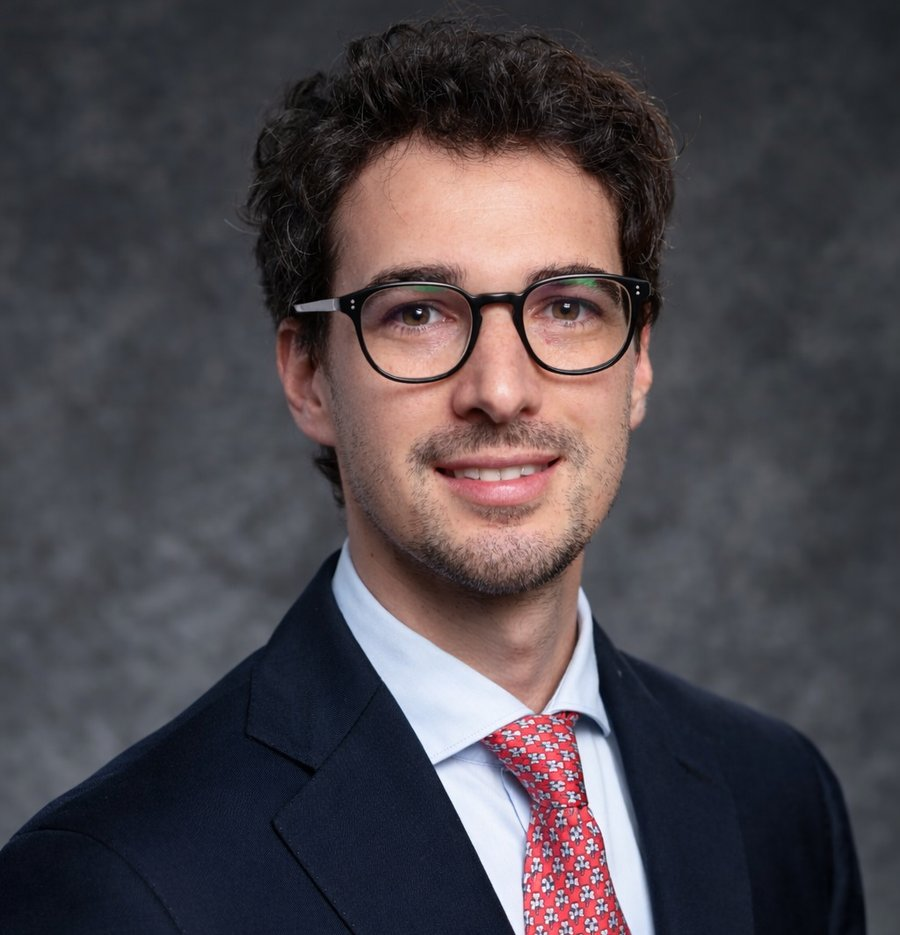
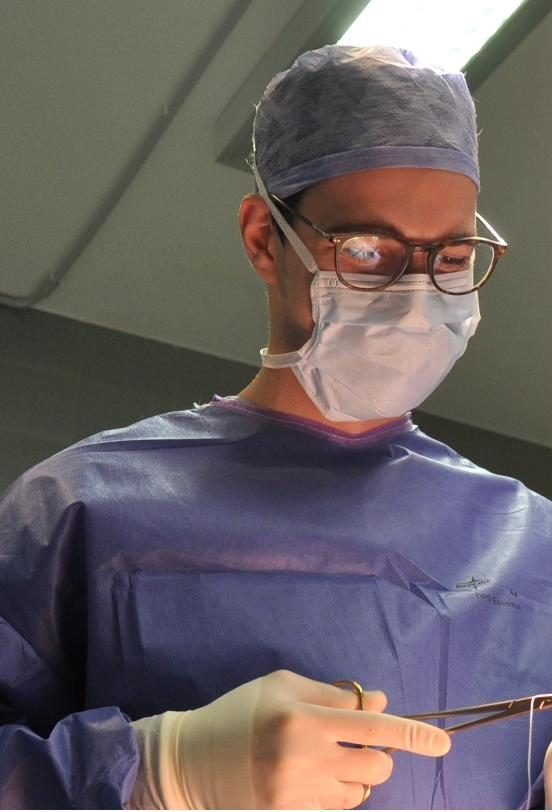
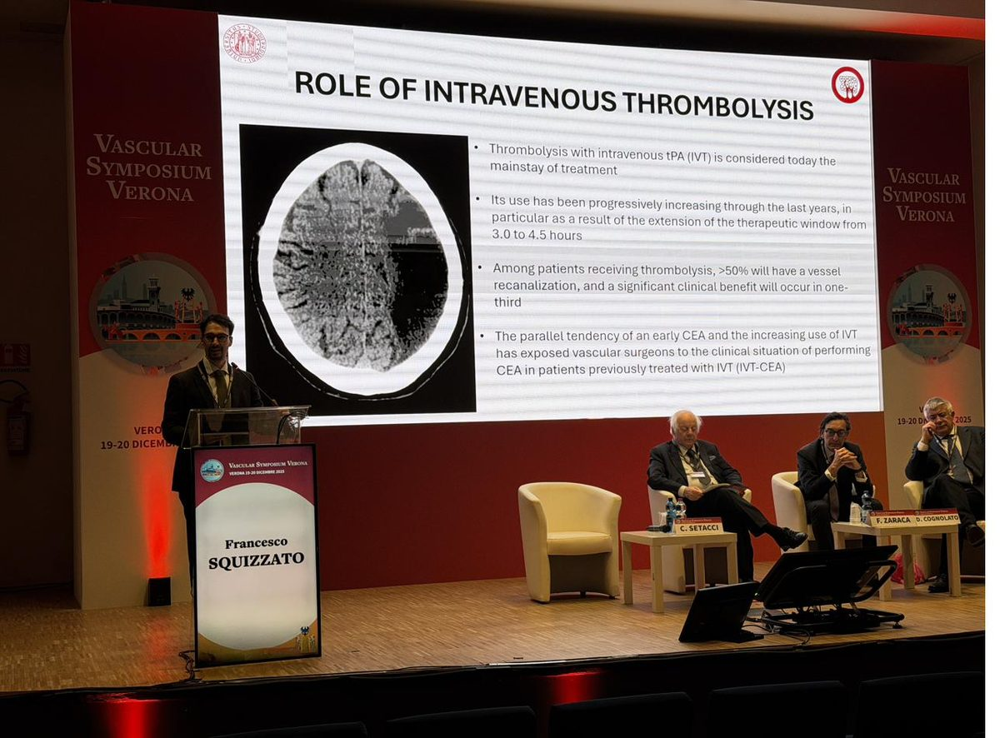
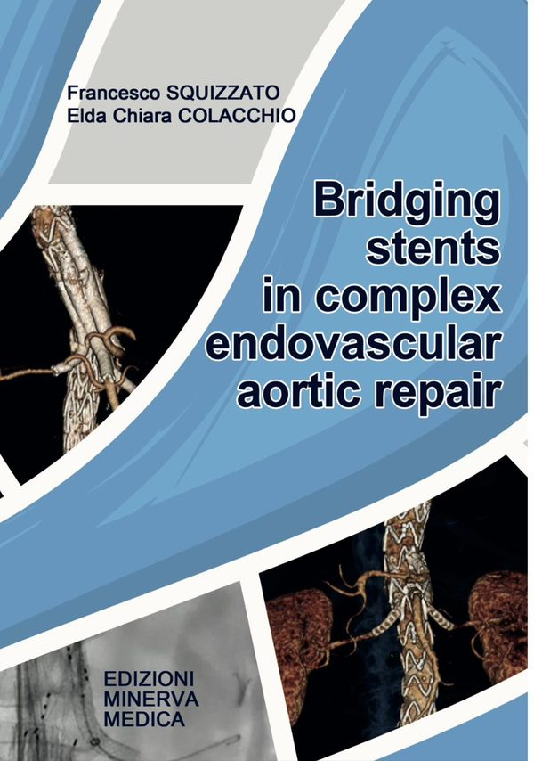

Prof.Francesco Squizzato
Chirurgo vascolare ed endovascolareProfessore Associato, Università di Padova
Mi occupo della diagnosi e del trattamento delle malattie delle arterie, con particolare esperienza nella patologia dell'aorta, delle carotidi e delle arteriopatie degli arti inferiori. Ogni percorso parte da una visita accurata e da una spiegazione chiara delle opzioni, chirurgiche e mininvasive.

Attività clinica
Mi occupo della diagnostica non invasiva e invasiva, del follow-up e del trattamento delle malattie delle arterie, sia di tipo ostruttivo sia di tipo dilatativo.
Diagnosi
Inquadramento clinico nel corso della visita specialistica, eco-color-doppler e, quando necessario, angio-TC e angiografia per definire con precisione il quadro.
Trattamento
Chirurgia vascolare tradizionale, endovascolare mininvasiva o ibrida, scelta in base al singolo paziente.
Follow-up
Controlli programmati nel tempo, per intervenire per tempo se necessario e verificare il risultato nei pazienti sottoposti a intervento.
Patologie trattate
Aneurisma dell'aorta addominale
Dilatazione dell'aorta nell'addome, spesso senza sintomi e scoperta per caso con un'ecografia. Sorveglianza e trattamento chirurgico tradizionale o endovascolare.
ApprofondisciAneurisma dell'aorta toracica e toraco-addominale
Dilatazione dell'aorta nel torace, che può estendersi all'addome e coinvolgere le arterie di intestino e reni. Trattamento con endoprotesi fenestrate e ramificate o chirurgia tradizionale.
ApprofondisciArteriopatia obliterante degli arti inferiori
Restringimento delle arterie delle gambe, che può dare dolore camminando (claudicatio intermittens), dolore a riposo o ferite di piedi e gambe che non guariscono. Ripristinare la circolazione è spesso decisivo per la guarigione e per salvaguardare l'arto.
ApprofondisciStenosi carotidea
Restringimento delle arterie del collo che portano sangue al cervello, tra le principali cause di ictus. Trattamento con endoarterectomia o stenting carotideo.
ApprofondisciLa pratica di metodiche sia chirurgiche tradizionali sia endovascolari mininvasive consente di proporre a ciascun paziente il trattamento più adatto, in base alle sue caratteristiche specifiche e personali.

Formazione ed esperienza
Laureato e specializzato con lode all'Università di Padova, ho completato una Research Fellowship alla Mayo Clinic di Rochester (USA). Dopo essere stato ricercatore all'Università di Padova, sono oggi Professore Associato di Chirurgia Vascolare e docente nel corso di laurea in Medicina e Chirurgia e nella Scuola di Specializzazione in Chirurgia Vascolare.
Opero nell'Unità di Chirurgia Vascolare ed Endovascolare dell'Azienda Ospedale-Università Padova. Sono autore di oltre centodieci pubblicazioni scientifiche internazionali e membro del consiglio direttivo della Società Italiana di Chirurgia Vascolare ed Endovascolare (SICVE).

Dalla ricerca alla pratica clinica
La ricerca è parte integrante del mio lavoro e nasce sempre dalla pratica clinica: dalle domande che emergono accanto ai pazienti e dalla necessità di dare risposte concrete ai loro problemi.
L'obiettivo è duplice: migliorare la cura di ogni singola persona e contribuire a far avanzare le conoscenze e le tecniche della chirurgia vascolare. Per la produzione scientifica ho ricevuto numerosi premi nazionali e internazionali.

Editor del volume Bridging stents in complex endovascular aortic repair, Edizioni Minerva Medica, 2025.
Attività didattica
Insegnare è parte del mio lavoro quanto la sala operatoria. Sono docente di Chirurgia Vascolare nel corso di laurea in Medicina e Chirurgia, anche nel percorso in lingua inglese, e nella Scuola di Specializzazione in Chirurgia Vascolare dell'Università di Padova, dove seguo la formazione clinica e chirurgica degli specializzandi.
Per gli anni accademici 2023-2024 e 2024-2025 ho ricevuto dall'Università di Padova l'attestato di merito per la didattica, assegnato ai docenti con la più alta valutazione da parte degli studenti.
Insegnamenti e materiali per studentiPrenota una visita
Visita specialistica, eco-color-doppler e trattamento personalizzato per aneurismi, stenosi carotidea e patologie vascolari complesse.
- Prima visita chirurgica vascolarePer un primo inquadramento: storia clinica, esame obiettivo, valutazione degli esami già eseguiti e indicazione al percorso più adatto.
- Visita chirurgica vascolare di controlloPer chi è già stato visitato o operato: follow-up nel tempo e valutazione degli esami di controllo.
- Eco-color-dopplerEsame ecografico arterioso e venoso, per inquadrare il problema e seguirne l'evoluzione nel tempo.
Come prenotare
Come si svolge
-
La prenotazione
Prenota per telefono, via email o online, indicando la prestazione con la stessa dicitura della richiesta del tuo medico.
-
La visita
Raccolta della storia clinica, esame obiettivo ed eventuale eco-color-doppler. Porta con te gli esami già eseguiti (ecografie, TAC, referti) e l'elenco dei farmaci che assumi.
-
Il percorso
Ti spiego con chiarezza la situazione e le possibili strategie: controlli periodici, terapia medica o intervento.